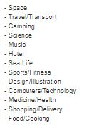
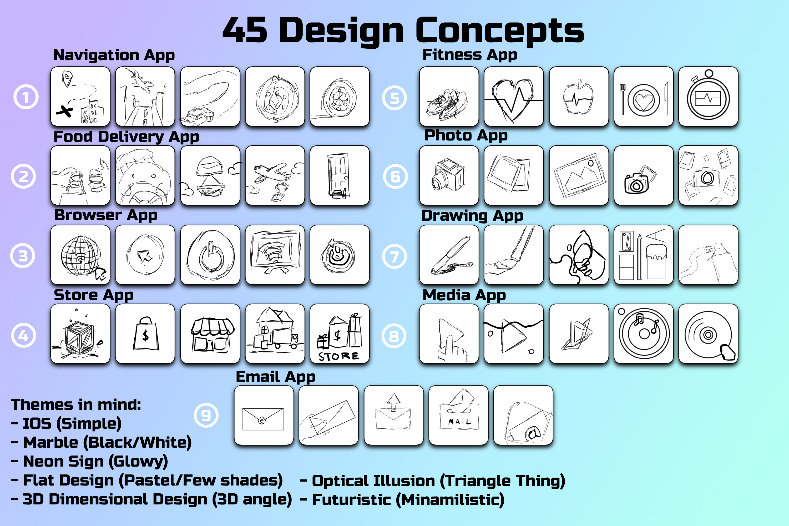
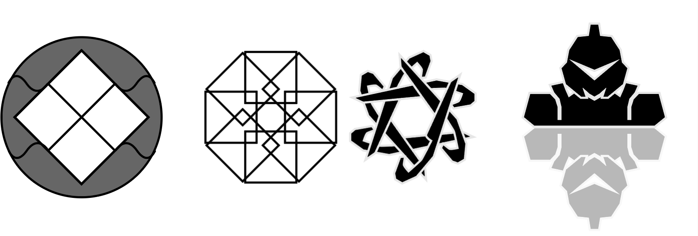
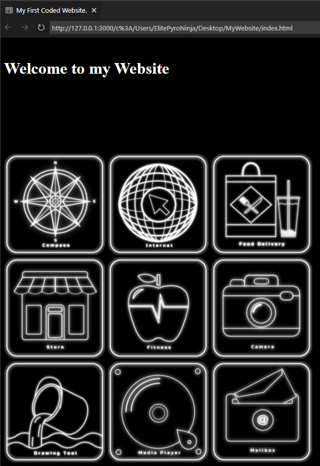

Assignment 2
Icon Design / Time
Assignment 2 focused on interactivity through housing of icons in a self-coded html website.
P l a n n i n g
Initially when it came to deciding what kind of logo's I wanted create, I looked at the themes and couldn't find a style that I partciularly wanted to do, so I went with something a bit more unique, I wanted to try and innovate on a pre-existing style and weave in my interest of neon lights.
I also took a large interest in these youtube album covers, it's been a personal interest of mine since it elevates the idea of night time live, particularly late night city driving. So I wanted my icons to based around the colour scheme/theme, that way I feel I have a clear expression and can broaden the message from the theme.
C o n c e p t s
I had generated 45 concept designs, mostly based off general apps you'd find on the app store such as Uber, Doordash, Amazon. Some other inspirations is youtube, art apps, mailbox, compass and health apps. Each field contains 5 concepts with various ideas that I have brainstormed or taken inspiration from pre-existing ideas, I also wanted to implement a marble theme as I remember most MAC cases having this marble feel, and it felt really luxurious but I also wanted a dark night time theme to weave through my personality into my work.
P o s i t i v e s
Some positives in this project was I got some really amazing ideas from my peers, such as inverting the icons when hovering above it so the neon theme implements both colour schemes of the white and black that I initially wanted at the start, thus creating a super unique colour scheme that makes good usage of the minimal colour scheme.
Another thing that I was proud of was the fact I had created some brand new icon designs that I had never done before (lineart wise). I was also really happy with the face I was able to implement my neon glows, personally it's a really cheap effect to mimic, but the payoff is immense which is why I am really happy.
N e g a t i v e s
Some negatives I encountered on the way was, not being able to find the sounds I exactly wanted to pair with my icons, this made me change some of my icons designs so I could pair a sound effect with them. Another negative was I bumped into a lot of HTML coding issues with the grid. Despite how simple my error was when making this portfolio, it brought me back majorly and potentially even halted my upload on time at all, thankfully I had some friends proof read my code to see where I couldn't, eventually we pointed out the issue and fixed it all.